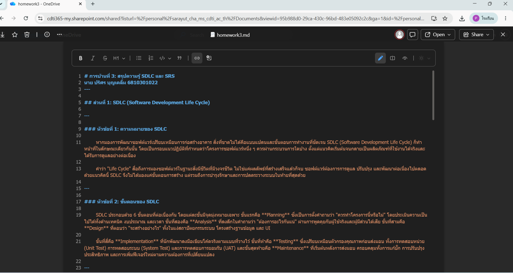

HW03: การทบทวนความรู้ SDLC และ SRS

รายละเอียด
สรุปความรู้เกี่ยวกับ SDLC (Software Development Life Cycle) ทั้ง 6 ขั้นตอน ได้แก่ Planning, Analysis, Design, Implementation, Testing และ Maintenance พร้อมอธิบายความหมายและความสำคัญของแต่ละขั้นตอน
สิ่งที่ได้เรียนรู้
เข้าใจภาพรวมของกระบวนการพัฒนาซอฟต์แวร์ตั้งแต่ต้นจนถึงการดูแลรักษาระบบ และความสำคัญของการจัดทำเอกสาร SRS ก่อนเริ่มพัฒนาจริง